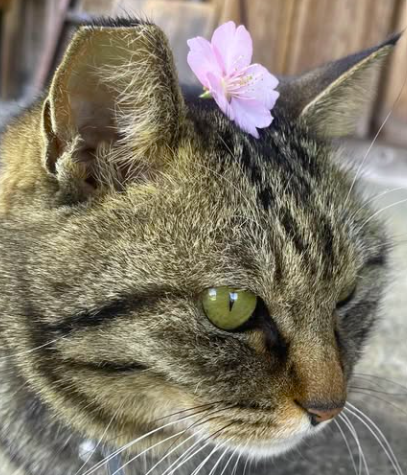

BOOKS
・ COFFEE ・ ART
・ COFFEE ・ ART
CAFE めがね書房 — 三重県大紀町
いつもの日常から、ほんの少し離れて。
本と珈琲と、好きなものに出会う時間。
ABOUT US
めがね書房について
本とアートと喫茶。
古い家の中にある、小さなブックカフェです。
2015年に三重県大紀町でオープンした、約10席の小さなブックカフェ。
店主が選んだ本を手に取り、コーヒーや季節のおやつを楽しみながら、ゆっくり過ごしていただけます。
本は読むだけでなく、気に入ったものを購入することもできます。店内ではアートの展示やイベントが開かれることも。
慌ただしい毎日のなかで、自分のペースに戻れるひとときをお過ごしください。
お店の日々をSNSで見る ↗
SHOP CAT
のはちゃん
お店で出会えるかもしれない、看板ねこ。
ACCESS & INFORMATION
アクセス・営業案内
- 住所
- 〒519-2731
三重県度会郡大紀町野原576-2 - 営業時間
- 12:00–17:00
ラストオーダー 16:30 - 定休日
- 月曜日・第1／第3日曜日
祝日の営業や臨時休業はSNSをご確認ください。 - 駐車場
- あり（店舗裏側）
台数や利用方法は来店前にご確認ください。
CONTACT
お問い合わせ
ご連絡はメールにてお願いいたします。
通常24時間以内の返信を心がけています。
電話でのお問い合わせは承っておりません。
SNSのDMも受け付けていますが、確認や返信が遅れる場合があるため、メールがおすすめです。